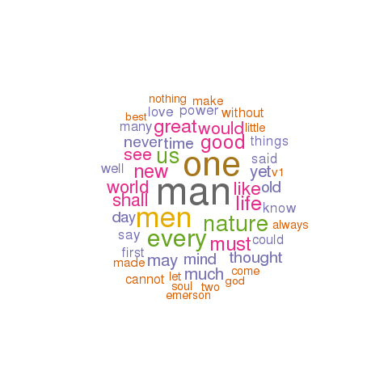

emerson
This page describes a corpus named emerson as created by a tool named the HTRC Workset Browser.
General statistics
An analysis of the corpus's metadata provides an overview of what and how many things it contains, when things were published, and the sizes of its items:
- Number of items - 62
- Publication date range - 1838 to 1956 (histogram : boxplot)
- Sizes in pages - 20 to 660 (histogram : boxplot)
- Total number of pages - 11866
- Average number of pages per item - 191
Possible correlations between numeric characteristics of records in the catalog can be illustrated through a matrix of scatter plots. As you would expect, there is almost always a correlation between pages and number of words. Are others exist? For more detail, browse the catalog.
Notes on word usage
By counting and tabulating the words in each item of the corpus, it is possible to measure additional characteristics:
Perusing the list of all words in the corpus (and their frequencies) as well as all unique words can prove to be quite insightful. Are there one or more words in these lists connoting an idea of interest to you, and if so, then to what degree do these words occur in the corpus?
To begin to see how words of your choosing occur in specific items, search the collection.
Through the creation of locally defined "dictionaries" or "lexicons", it is possible to count and tabulate how specific sets of words are used across a corpus. This particular corpus employs three such dictionaries -- sets of: 1) "big" names, 2) "great" ideas, and 3) colors. Their frequencies are listed below:
The distribution of words (histograms and boxplots) and the frequency of words (wordclouds), and how these frequencies "cluster" together can be illustrated:
Items of interest
Based on the information above, the following items (and their associated links) are of possible interest:
- Shortest item (20 p.) - The wisest words ever written on war / by R.W. Emerson ... Preface by Henry Ford. (HathiTrust : WorldCat : plain text)
- Longest item (660 p.) - Representative men : nature, addresses and lectures. (HathiTrust : WorldCat : plain text)
- Oldest item (1838) - An address delivered before the senior class in Divinity College, Cambridge, Sunday evening, 15 July, 1838 / by Ralph Waldo Emerson. (HathiTrust : WorldCat : plain text)
- Most recent (1956) - Emerson at Dartmouth; a reprint of his oration, Literary ethics. With an introd. by Herbert Faulkner West. (HathiTrust : WorldCat : plain text)
- Most thoughtful item - Transcendentalism : and other addresses / by Ralph Waldo Emerson. (HathiTrust : WorldCat : plain text)
- Least thoughtful item - Emerson-Clough letters, edited by Howard F. Lowry and Ralph Leslie Rusk. (HathiTrust : WorldCat : plain text)
- Biggest name dropper - A letter of Emerson : being the first publication of the reply of Ralph Waldo Emerson to Solomon Corner of Baltimore in 1842 ; With analysis and notes by Willard Reed. (HathiTrust : WorldCat : plain text)
- Fewest quotations - The wisest words ever written on war / by R.W. Emerson ... Preface by Henry Ford. (HathiTrust : WorldCat : plain text)
- Most colorful - Excursions. Illustrated by Clifton Johnson. (HathiTrust : WorldCat : plain text)
- Ugliest - An address delivered before the senior class in Divinity College, Cambridge, Sunday evening, 15 July, 1838 / by Ralph Waldo Emerson. (HathiTrust : WorldCat : plain text)
Eric Lease Morgan, Librarian
University of Notre Dame
{kind=link}
{kind=link}
{kind=link}
{kind=link}
{kind=link}
{kind=link}
{kind=link}
{kind=link}
{kind=link}
{kind=link}
{kind=link}
{kind=link}
{kind=link}
{kind=link}
{kind=link}
{kind=link}
{kind=link}
{kind=link}
{kind=link}
{kind=link}
{kind=link}